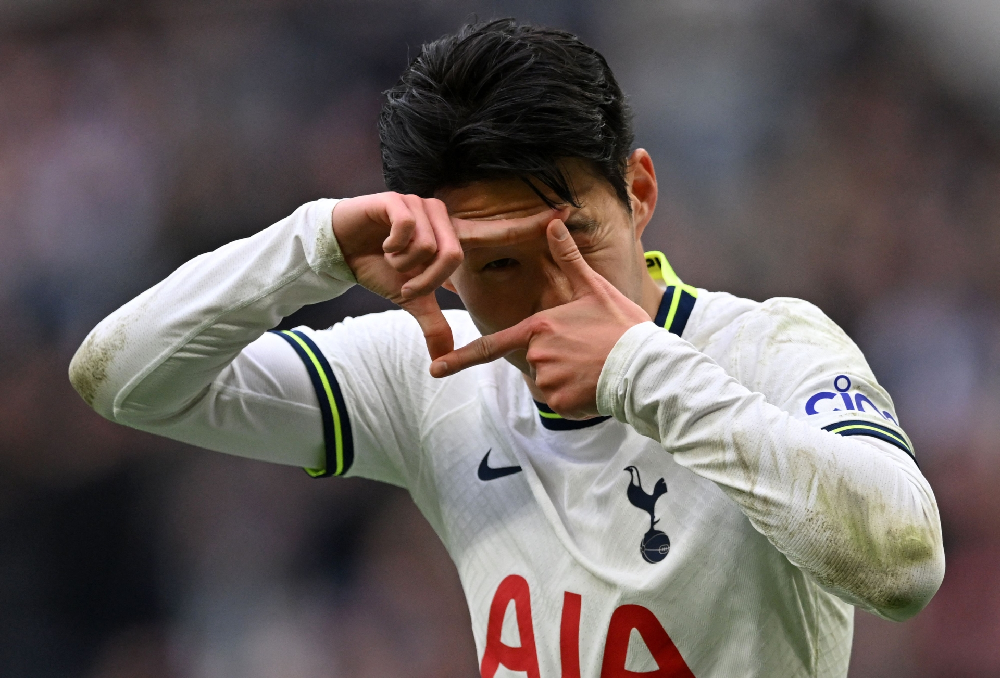

Son

손흥민(孫興慜, 1992년 7월 8일~)은 대한민국의 축구 선수로 포지션은 공격수이다. 현재 프리미어리그의 토트넘 홋스퍼와 대한민국 축구 국가대표팀에서 활동하고 있으며 토트넘 홋스퍼와 대한민국 대표팀의 주장을 맡고 있다.[
We2018년 아시안 게임 금메달리스트이며 아시아 선수로서는 역대 최초로 프리미어리그 공식 베스트 11과 아시아 선수 최초의 프리미어리그 득점왕과 FIFA 푸슈카시상을 받았고 2022년에 축구 선수로는 최초로 체육훈장 청룡장 수훈자가 되었다